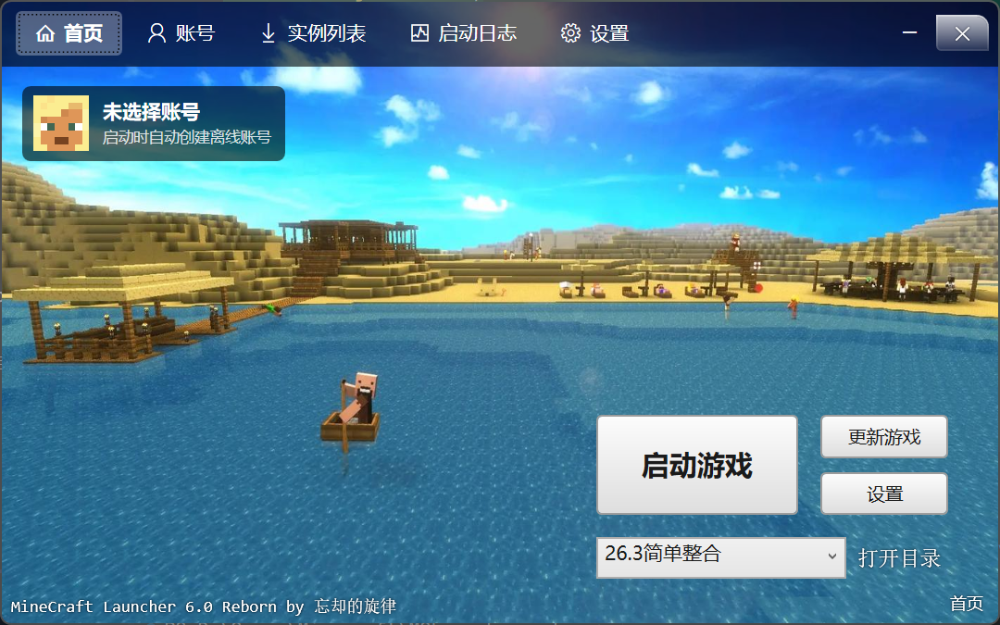
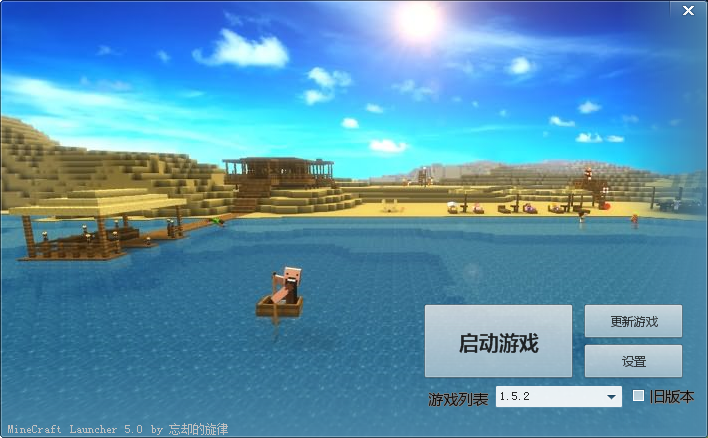

MCLauncher 6.0
Minecraft 启动器
轻量、绿色、易用的 Minecraft 启动器
MCLauncher 支持绿色免安装、自定义启动内存、整合包更新与多客户端共存，帮助玩家更省心地管理 Minecraft 游戏。
本页面仅提供启动器程序，不提供、也不分发 Minecraft 游戏本体。游戏文件请通过官方渠道获取。
仅启动器下载
当前版本：6.0
预览图

历史版本：5.3
- 纯绿色版：游戏保存在MClauncher所在目录，方便MOD安装，一台电脑可以存在多个客户端.
- 整合包更新：免去游戏频繁升级需要重新装MOD的麻烦,整合基本MOD.
- 更新速度快：解决国内Minecraftsp更新速度慢,甚至没速度的问题.
- 定制启动内存：可自由设置最大内存.
- 更人性化的界面
✖此版本因过期已离线无法正常运行，请下载当前 6.0 版本体验！
5.3下载地址：2014/09/04 16:00
预览图
